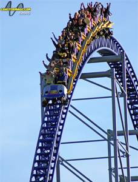

MILLENNIUM FORCE
SPECS
Max Height: 310 ft.
Max Speed: 93 mph
Inversions: 0
Duration: 1 min. 45 sec.
Manufacturer: Intamin AG
REIVEW
Millennium Force features probably the scariest incline you will ever experience. Before going on this ride, I heard that it has an elevator lift (no chains) and I didn’t think anything of it really. But once that lift comes down and connects to the train, you go up the steepest lift hill at double the speed of a chain lift for what seems like eternity (300 ft.). The drop is one to remember and it lasts for a while. But comparing this to Raging Bull, it’s hard to tell the difference between 200 and 300 ft. After the first drop, you go through a series of hard curves and bunny hills. Considering all the critical acclaim this ride receives, I was expecting a little more than it delivered. The bunny hills are awesome and you do get a lot of air time on them, but I felt like the ride was short. But if you look at the ride length, you wouldn’t think that. So maybe this is just me with way too high expectations for this ride. Regardless, this ride is still a gem. Definitely give this one a chance.